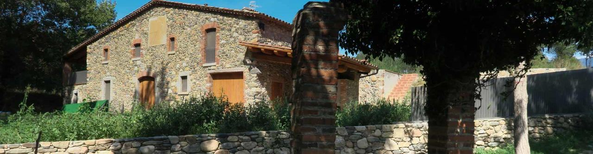

Ruta · Palautordera
Excursió familiar i planera en l’àmbit del riu La Tordera per conèixer algunes construccions que en el seu origen havien estat molins fariners o d’oli. Alhora voltarem per la riba i la llera de La…